Bahamut Lagoon2021-06-01
Bahamut Lagoon is a tactical role-playing game released by Squaresoft on February 9th, 1996 for the Super Famicom (SNES.)
Here you will find our English fan-translation patch for the game.
Our project began on September 25th, 2020, and entered beta testing on December 25th, 2020. The official release was on February 9th, 2021 for Bahamut Lagoon's 25th anniversary.
Download
Bahamut Lagoon (EN) [1.2]
Source Code (ISC) [1.2]
Screenshots
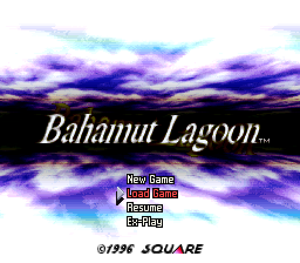
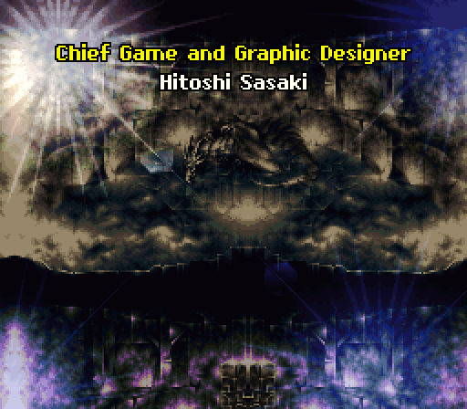

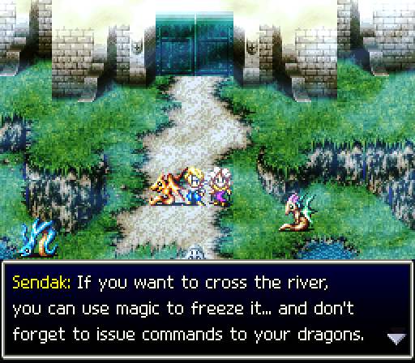
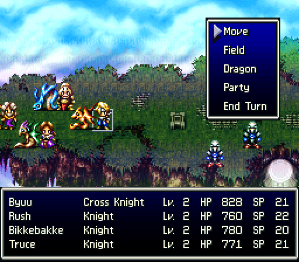
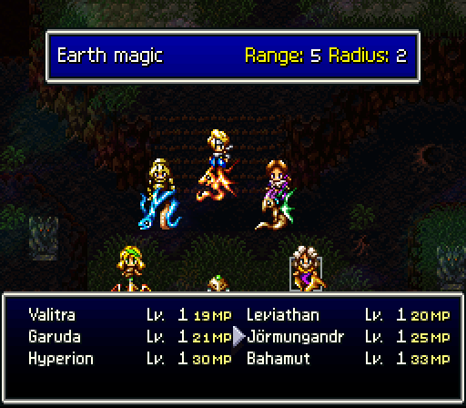
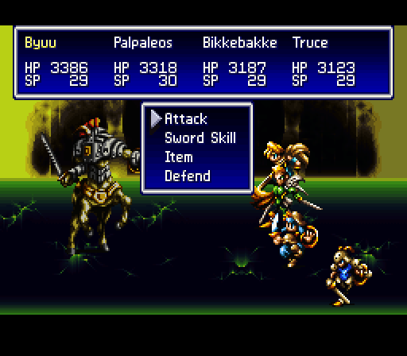
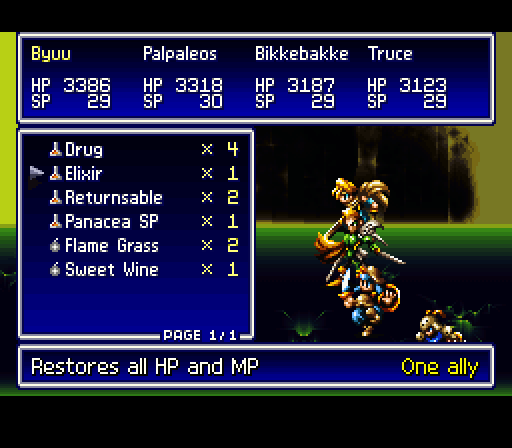
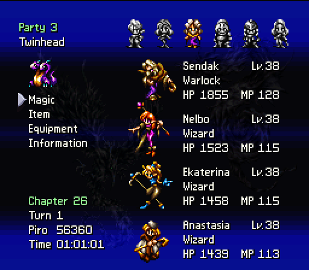
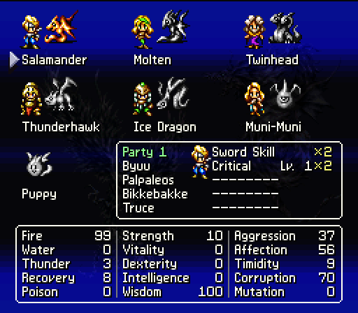
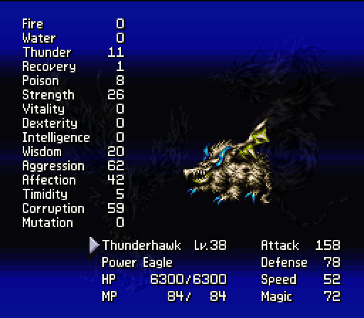
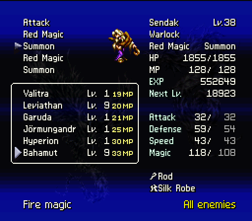
Features
- A brand new script translation from a native English speaker with Japanese fluency far beyond the JLPT N1.
- Exhaustively researched translations for all names.
- Ubiquitous use of proportional fonts and tabular numbers throughout the entire game.
- Normal-weighted sans-serif fonts with strong shadowing and anti-aliasing for readability.
- An italic font for sound effects and letters, a smallcaps font for menu headings, and a bold font for the credits.
- Support for extended characters such as umlauts to allow for more faithful translations.
- True font kerning with overlap support for every font in the game.
- Player and dragon names were expanded to 11 characters, allowing even the longest names to fit.
- Every list (of names, items, enemies, etc) has been statically rendered for performance.
- Player and dragon names are cached in memory, so they do not have to be rendered dynamically within menus.
- When necessary, pre-shifted proportional fonts provide the fastest dynamic text rendering possible.
- Field status display messages converted to use the larger proportional font for consistency and increased readability.
- All proportional text strings are double-buffered to prevent flickering when moving between screens and lists.
- Extensive knowledge of the SNES hardware was utilized to safely maximize data transfers to video RAM each frame.
- Expanded save RAM and a method to avoid requiring memory initialization to greatly reduce required game code hooks.
- Not that they are necessary, but safeguards were put into place to prevent text overflow for every string in the game.
- Multiple text colors were added to help distinguish between text, names, headers, quantities, etc.
- The title screen menu and ending screen graphic were redesigned for better legibility.
- The opening and ending credits were redesigned with a new bold font for better legibility.
- All Japanese graphical text strings were translated, and English text strings were localized better.
- Every menu dynamically resizes to take up the least amount of screen space possible.
- Every menu cursor has been repositioned for consistency.
- Every menu screen has had its layout optimized for readability.
- Several bugs present in the original game were fixed.
- All dragon stats (including previously hidden stats) have been made available on all screens.
- The internal debugger has been fully translated into English, with some of its original bugs fixed.
- Item icons added to the player field screens.
- Status icon ordering has been made consistent between all of the various screens in the game.
- Class names have been re-added to screens they were missing from when no status modifier icons apply.
- Pixel-perfect alignment of every string with left/center/right-justification support.
- Customized and additional HDMA scrolling tables to present additional strings within menus.
- All menus optimized to avoid the overscan areas of CRT monitors.
- Extensive beta testing including dozens of completed play-throughs.
- Over 370KB of new SNES assembly code and 180KB of tooling code.
- Source code written using extensive macros and pseudo-instructions to enhance readability.
- The entire project is fully open-source and ISC-licensed. Translations to other languages are welcome and encouraged!
- Absolutely no self-promotion or hidden easter eggs replacing dialogue from the original game.
- ... and so very, very much more!
Authors
Near — programming and design
Tom — script translation
Contributors
FlashPV — ending graphic
dev_urandom — italic font
blargg — optimized base56 coder
Zehzin — beta testing
socksfelloff — beta testing
Rock — beta testing
ContraryMotion — script proofreading
Ballz — script proofreading
Lord Nightmare — script proofreading